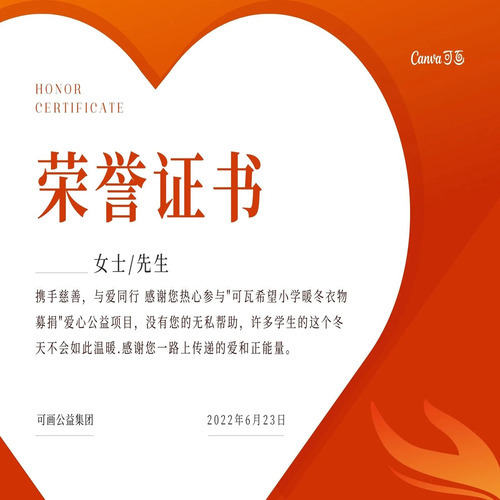
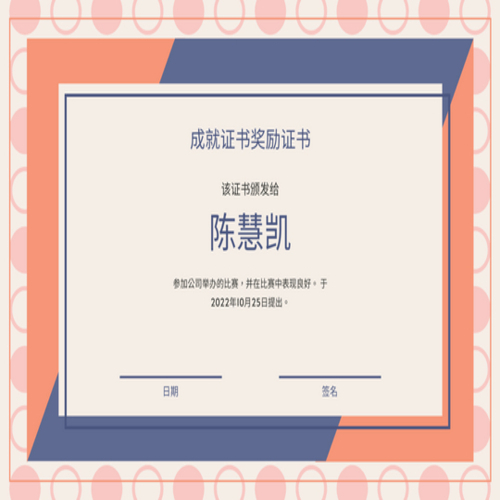
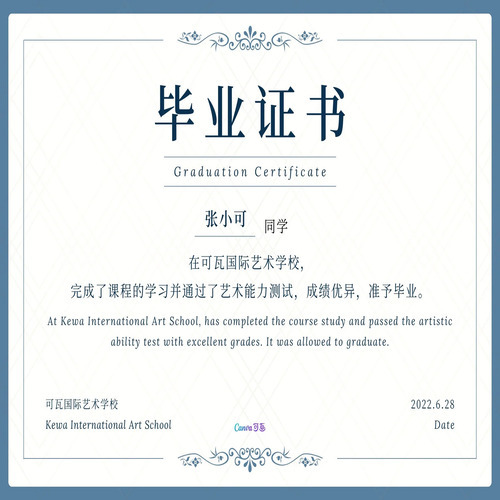
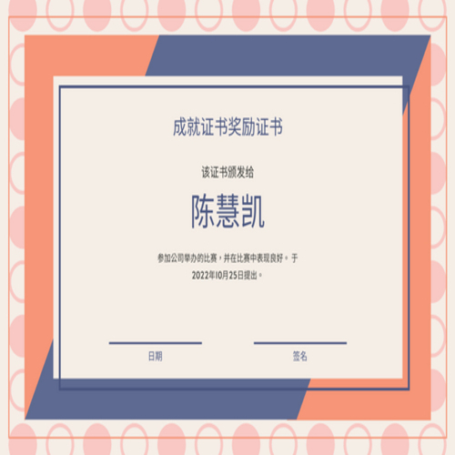
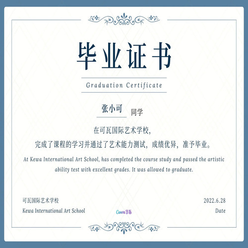
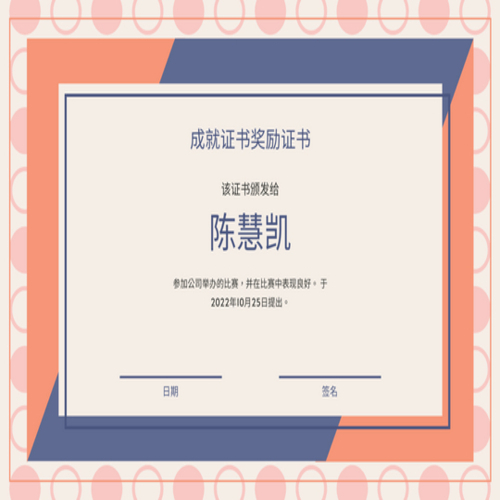
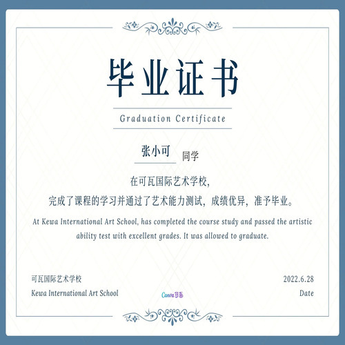

Zhexuan Zhao
I was able to choose to work as a sales consultant because I am an extrovert and an excellent interpersonal conversationalist myself. According to the personality test, I can gain energy from external communication to enhance my work further. At the same time, I am relatively good at logical thinking skills, which means that I can integrate the acquired customer information reasonably rationally to maximize the data's efficiency. Through the personality test, my test result is ESFP, which shows that I am suitable for working with fast-paced people, which is what I want; I want to work with more productive people.
I am also very talkative, and since Sales Managers need to communicate a lot with customers to get information about them to determine their sales approach, I can get the relevant information I need to know about them in a pleasant conversation. I am also very adaptable, as the real estate market in China changes frequently and is affected by policy changes, which means that the company's sales strategy has to change all the time. I am so adaptable that I can adjust my staffing and sales plans to the market in the shortest possible time without any significant changes in the market that might cause a decline in sales. Because I am a leader, I can diffuse a tense situation or atmosphere and focus on what is happening in front of me to facilitate interaction.
However, my disadvantage is also apparent. I am not a good planner, and most of the decisions I make are not planned trips but based on the current situation based on my own experience to make a judgment; this may bring me many disadvantages. I need to increase my logic when making decisions rather than just judging from experience.
Also, because I spend more time socializing at work, and because the continuous conversation is what I think is essential for success in this job, there should be a relative balance between social time and work time, and what I need to do is to arrange a reasonable schedule for myself to organize my tasks for each period. I am good at this job because I am a very diverse person, I don't do things by the book, and the position of Sales Manager requires a various person like me. I want options and opportunities, and I am very much about autonomy and flexibility, and any approach is acceptable as long as it achieves the goal. Rather than having to follow the company's dogma, that's what I find most attractive about this job.
Experience
Nike
• https://www.nike.com/
• Manage the logistics of goods in Nike's logistics department
• I have previous experience in managing accounts
Education
UC Riverside
University of California Riverside
University of California Riverside
Portfolio

 




